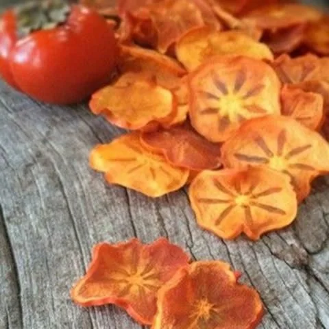
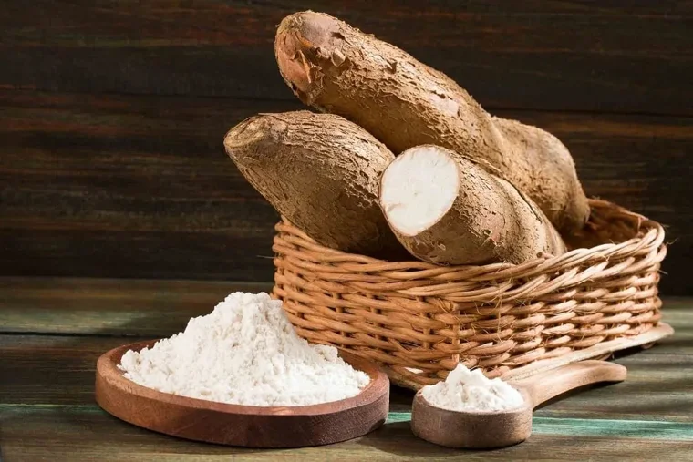

Fruit
Dried mango
Snack on it or chop it into muesli.
DRIED FOODS FROM CAMEROON
From dried mango to ndolé leaves, explore Cameroonian ingredients for breakfast, snacking and home cooking.

Products
Search for an ingredient or choose a category. Save products to ask about prices and availability.
No matching products. Try a different search term.
Snack on it or chop it into muesli.

Try it in yogurt, breakfast bowls or on the go.
Add variety to muesli and snack mixes.

For sauces, rice dishes and savory fillings.

An ingredient in the Cameroonian dish made with peanuts.

Use it in recipes specifically developed for cassava flour.

Try it in plantain flour recipes such as flatbreads.
Chop dried mango and mix it with oats, yogurt and toasted seeds. Add a squeeze of lime for freshness.
Good Food · Tropical muesli bowlsIn Cameroon, ndolé refers to both the bitter leaves and the dish. The leaves are prepared with peanuts, and versions may include shrimp, fish or meat.
Read about the dish (WIPO)About DK Bio
DK Bio started in 2022 with an idea to make better use of local harvests. In Douala, the brand processes Cameroonian produce into dried foods so that fruit, vegetables and leaves can be used beyond harvest season.
Save products from the catalog and open your list. Draft an email asking for current prices, pack sizes and delivery options.
Check the packaging label. Before buying, ask DK Bio for the label of the specific product.
Contact
Deido, Douala, opposite Le Petit Monde school